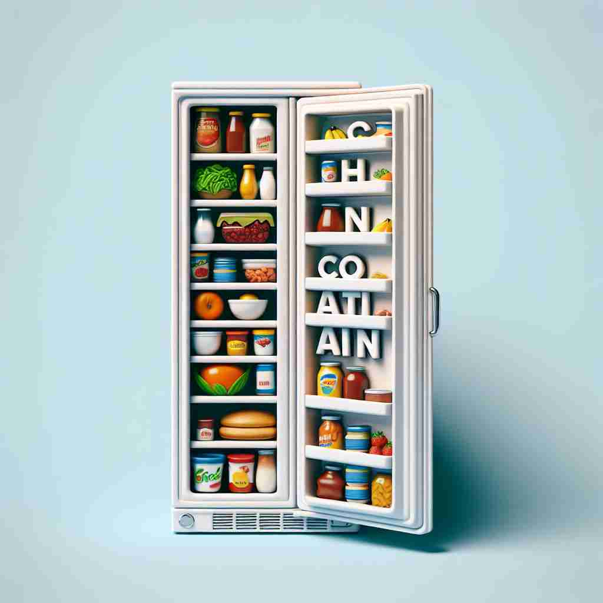

💬 The glass can contain water and bubbles.

💬 The box can contain many toys inside it.
💬 The jar can contain beautiful flowers from the garden.

💬 The refrigerator can contain various foods and drinks.
🔈 [kən'teɪn]
🗝️ v. to have something inside or include something as a part
🖼️ 在一个宁静的厨房里，妈妈正在做晚餐。她打开一个玻璃罐，里面装满了新鲜的饼干。这展示了'contain'的含义：容纳或包含某物。
🔍 想象一个容器，它可以"包含"（contain）各种东西。这个容器可以是实物（如盒子），也可以是抽象的（如范围、能力或内心）。无论是物质还是非物质的东西，都可以被"包含"在内。这个核心概念贯穿了"contain"的各种用法，帮助你更容易理解和记忆它的多重含义。
💬 The glass can contain water and bubbles.
💬 The box can contain many toys inside it.
💬 The jar can contain beautiful flowers from the garden.
💬 The refrigerator can contain various foods and drinks.
🌳 由前缀 "con-"（共同）和词根 "tain"（持有、保持）组成，意思是 "包含、容纳"。
💡 记忆 "contain" 时，可以联想为 "共同持有" 即 "包含" 的意思。可以想象一个容器把多样东西一起放在里面，从而帮助记忆。
🗝️ v. to keep something within limits or under control
🖼️ 在一个实验室中，化学家仔细地观察反应。他将化学品放入试管中，确保反应始终保持在安全限度内，展示了'contain'作为控制或限制的意义。
💬 The fire fighters managed to contain the forest fire.
❓ 将某物"包含"在一定范围内
🗝️ v. to be able to hold or accommodate
🖼️ 在一个即将举行的大型音乐会的体育馆里，工作人员确认场地的容量，以确保能容纳所有期待的观众。这突出了'contain'表示能够容纳的含义。
💬 This stadium can contain up to 50,000 spectators.
❓ 有能力"包含"一定数量或体积
🗝️ v. to restrain or hold back (emotions, reactions)
🖼️ 在一次严肃的商务会议中，员工们听到不利消息时相互对望，但努力控制住自己的惊讶和失望，这展示了'contain'用来表达抑制情感的含义。
💬 He could barely contain his excitement when he heard the news.
❓ 将情感或反应"包含"在内心
🗝️ v. to prevent from spreading or escaping
🖼️ 在一个消防演习中，消防员们迅速行动以控制火情，防止火势蔓延到其他建筑物。这突出了'contain'作为防止扩散的意义。
💬 The company is working to contain the oil spill.
❓ 将某物"包含"在特定区域内，防止扩散